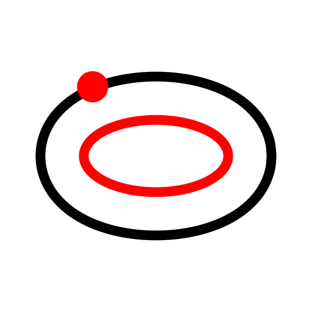
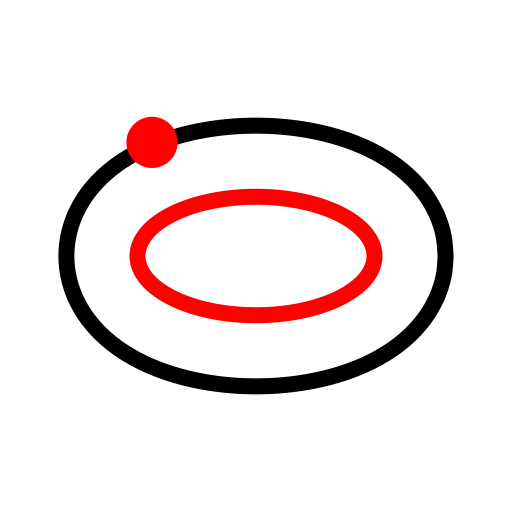
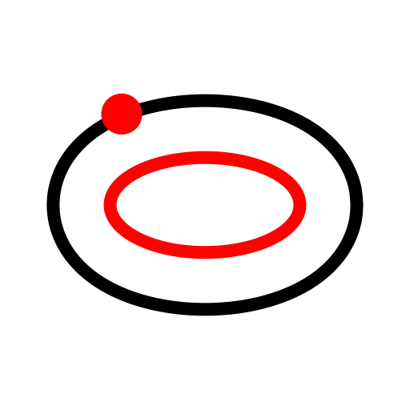
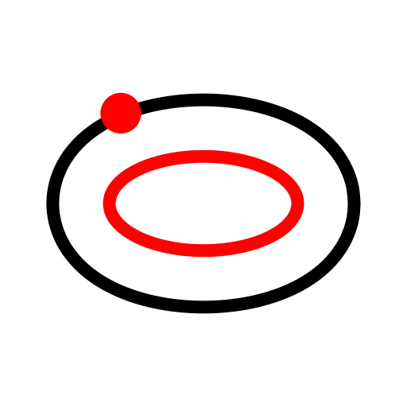
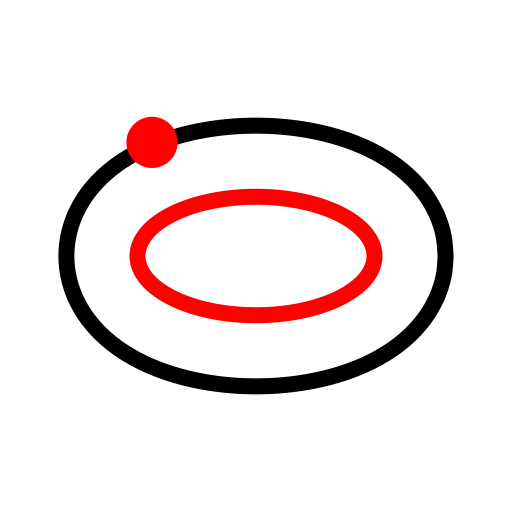

Vzporedna krivulja (skozi točko)
Toolbar / Icon:

Menu:
Risanje > Elipsa > Vzporedna krivulja (skozi točko)
Shortcut:
E, G
Commands:
ellipseoffsetthrough | eg
Opis:
S tem orodjem, lahko konstruirate kocentrične kroge, ki tečejo skozi določeno točko.
 


